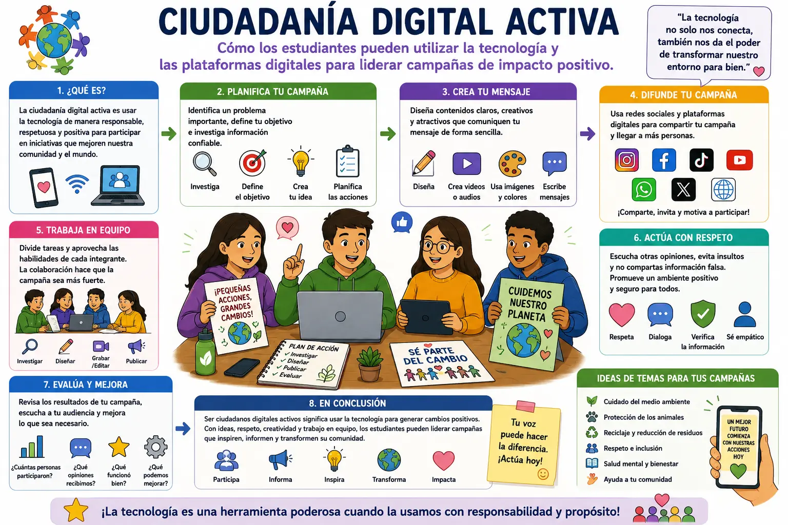

Ciudadanía digital activa
Introducción
La ciudadanía digital activa consiste en utilizar la tecnología y los espacios de internet de una manera responsable, respetuosa y positiva. Los estudiantes forman parte de una sociedad cada vez más conectada, por lo que pueden utilizar las herramientas digitales no solamente para estudiar o entretenerse, sino también para participar en iniciativas que ayuden a otras personas y a su comunidad.
Una de las formas de practicar la ciudadanía digital activa es crear campañas sobre temas que sean importantes para la comunidad. Por ejemplo, los estudiantes pueden realizar campañas relacionadas con el cuidado del medio ambiente, el respeto entre compañeros, el reciclaje, la protección de los animales o la importancia de mantener los espacios públicos limpios. Las plataformas digitales permiten compartir estos mensajes con muchas personas.
Para realizar una campaña es necesario comenzar con una idea clara. Primero se debe identificar el problema que se quiere tratar y establecer qué objetivo se desea alcanzar.
Después, los estudiantes pueden investigar información confiable y pensar en diferentes maneras de comunicar el mensaje. Una buena planificación permite que la campaña tenga un propósito definido y sea más fácil de desarrollar.
Las redes sociales y otras plataformas digitales pueden servir para difundir las campañas. Los estudiantes pueden crear afiches digitales, videos, publicaciones, presentaciones o mensajes informativos. También pueden utilizar herramientas de diseño para elaborar contenidos llamativos que ayuden a explicar el tema de una manera sencilla. Sin embargo, siempre deben cuidar la información que comparten y evitar publicar datos falsos.
El trabajo en equipo también es importante para desarrollar una campaña digital. Algunos estudiantes pueden encargarse de investigar, otros de diseñar las publicaciones y otros de preparar los videos o textos. Al dividir las responsabilidades, todos pueden participar y aportar sus habilidades. Además, trabajar en grupo ayuda a desarrollar la comunicación, la creatividad y la capacidad de organizar proyectos.
Ser un ciudadano digital activo también significa respetar a las demás personas. Una campaña no debe utilizar insultos, amenazas o mensajes ofensivos para conseguir atención. Las opiniones diferentes deben tratarse con respeto y cualquier información compartida debe revisarse antes de publicarse. De esta manera, se puede utilizar internet para generar conversaciones positivas en lugar de conflictos.
Otro aspecto importante es medir los resultados de la campaña. Después de publicar los contenidos, los estudiantes pueden observar cuántas personas participaron, qué opiniones recibieron y si se logró el objetivo propuesto. Con esta información pueden identificar qué funcionó bien y qué aspectos podrían mejorar. Así, cada proyecto se convierte también en una oportunidad para aprender.
En conclusión, la ciudadanía digital activa permite que los estudiantes utilicen la tecnología para participar de manera responsable y contribuir positivamente a su comunidad. Crear campañas, compartir información confiable, trabajar en equipo y respetar a los demás son algunas formas de aprovechar las plataformas digitales para generar cambios positivos. La tecnología puede ser una herramienta muy poderosa cuando se utiliza con responsabilidad, creatividad y un propósito que beneficie a los demás.
